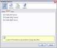
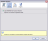
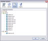
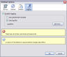

Servers
This panel controls the POP, SMTP, and IMAP servers
-
Status
This tab shows the status of the three servers. There are three possible values Running, Stopped, Error.

-
Enable
This tab is used to enable or disable the servers. By default the POP and SMTP servers are enabled.
 -
Ports
This tab is used to set the port numbers of the servers. By default POP=110, SMTP=25, IMAP=143.
Some operating systems block ports below 1024.
General
The option “Add WebMail to Account Wizard” simplifies the POP account creation process by automatically setting the port number and server name in the account wizard. This feature requires write access to the application folder so will be unavailable on some OS.
Domains
This panel displays the supported domains.
Logging
This panel is used to enable/disable logging. By default logging is disabled.
